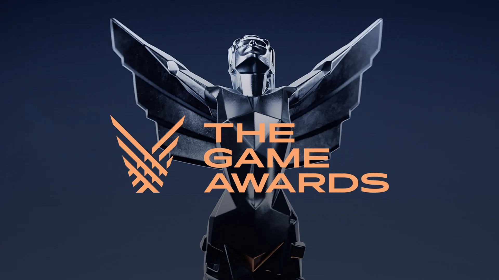

O Legado de Tsushima
Ghost of Tsushima é uma obra-prima de ação e aventura em mundo aberto ambientada no Japão Feudal. O game mescla com maestria a precisão histórica com uma narrativa cinematográfica inspirada nos clássicos filmes de samurai de Akira Kurosawa.
Gênero: Ação, Aventura, Mundo Aberto, Stealth (Furtividade).
Público-Alvo: Entusiastas da cultura e história japonesa, fãs de jogos baseados em narrativas profundas e jogadores que buscam combates táticos desafiadores.
Disponibilidade

Lojas Oficiais:
Sucker Punch Productions
Fundada em 1997 e parte da família PlayStation Studios desde 2011, a desenvolvedora norte-americana atingiu seu ápice técnico e artístico na reconstituição da Ilha de Tsushima.
Lançado originalmente em 2020 para o PlayStation 4 (e depois expandido para PS5 e PC), Ghost of Tsushima foi uma grande mudança de rumo para o estúdio. Eles deixaram de lado o estilo urbano e moderno de inFamous para criar um épico histórico realista ambientado no Japão Feudal de 1274.
O sucesso foi tão gigantesco (superando 13 milhões de cópias vendidas) que a franquia continua expandindo, com uma adaptação para o cinema confirmada e a aguardada sequência, Ghost of Yōtei, focada em uma nova protagonista em outra região do Japão.

Aclamação e Prêmios
Ghost of Tsushima foi um dos maiores fenômenos críticos e comerciais de sua geração. O título recebeu destaque máximo na indústria global de jogos:
- Nomeado ao GOTY 2020: Concorreu na categoria máxima de Jogo do Ano no The Game Awards 2020.
- Vencedor - Melhor Direção de Arte: Premiado no TGA 2020 por sua estética visual inigualável.
- Vencedor - Escolha do Público: Consagrado pelos próprios jogadores com o prêmio Player's Voice.
- Sucesso Absoluto de Crítica: Elogiado mundialmente pela fidelidade e respeito às tradições orientais.
Requisitos do Sistema (PC)
Mínimo 720p @ 30 FPS - Gráficos Baixos
- SO: Windows 10 64-bit
- Processador: Intel Core i3-7100 ou AMD Ryzen 3 1200
- Memória: 8 GB de RAM
- Placa de Vídeo: NVIDIA GTX 960 (4GB) ou AMD RX 5500 XT
- Armazenamento: 75 GB de espaço livre (SSD recomendado)
Recomendado 1080p @ 60 FPS - Gráficos Médios/Altos
- SO: Windows 10/11 64-bit
- Processador: Intel Core i5-8600 ou AMD Ryzen 5 3600
- Memória: 16 GB de RAM
- Placa de Vídeo: NVIDIA RTX 2060 ou AMD RX 5600 XT
- Armazenamento: 75 GB de espaço livre em SSD (Obrigatório)
Opinião da Comunidade
Veja o que os guerreiros que já trilharam esse caminho acharam da experiência.
"Nunca fui de escrever reviews de jogos, mas esse realmente mereceu uma. Depois de mais de 40 horas, posso dizer que foi um dos melhores jogos que joguei este ano. A história é muito boa a ambientação e a dublagem são excelentes e o combate é de longe, o ponto mais forte. A jogabilidade é fluida, intuitiva, bom game."
"Se curte jogos de samurai, esse é obrigatório. O combate é muito satisfatório, a história prende do começo ao fim e o mundo é lindo de explorar. Tem algumas missões repetitivas, mas no geral é uma experiência incrível. Recomendo demais."
Classificação Indicativa
Não recomendado para menores de 18 anos. Contém violência extrema, mutilação e linguagem forte.